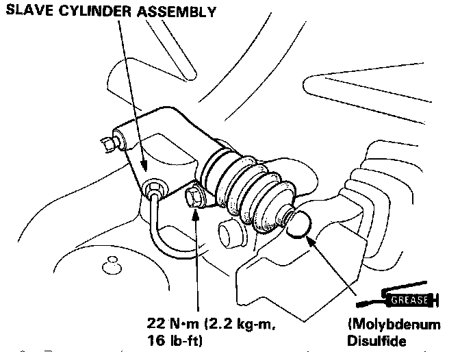
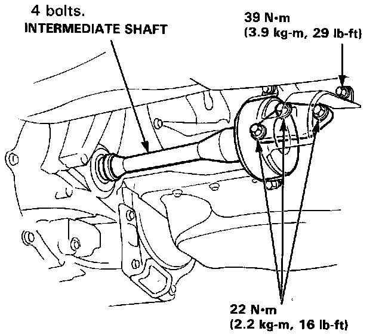
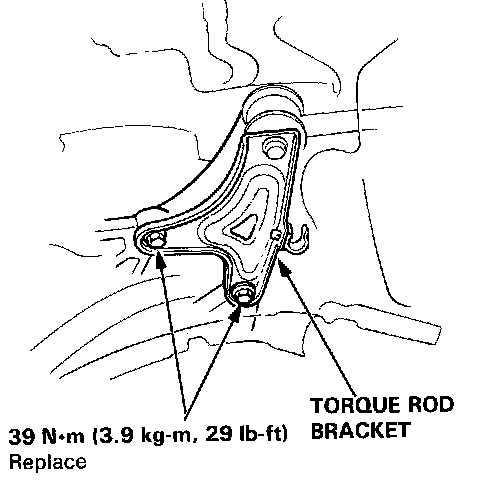

Removal
TRANSMISSION REMOVAL
1. Disconnect battery ground and positive cables from battery.
2. Disconnect starter wiring, then the back-up lamp switch electrical connector from engine.
3. Disconnect engine wiring harness from transaxle housing.
4. Loosen bolts at battery base.
5. Loosen the 6 x 1.0 mm bolt attaching the harness holder at the side of the transmission hanger, and release harness from the transmission.
6. Loosen the 6 x 1.0 mm bolts at the side of the battery base, and intake hose band.
7. Remove air cleaner assembly with air intake hose.
8. Remove the 8 x 1.25 mm bolts and the clutch slave cylinder with the clutch pipe and push rod.
9. Remove the 8 x 1.25 mm bolts and clutch damper assembly from transmission hanger bracket.

10. Remove clutch slave cylinder attaching bolts, then the clutch slave cylinder with clutch hose and push rod.
11. Remove clutch damper assembly attaching bolts, then the clutch damper assembly from transaxle hanger bracket.
CAUTION: Do not operate clutch pedal with slave cylinder removed.
12. Remove power steering speed sensor with sensor hose.
13. Drain transaxle oil, then reinstall drain plug.

14. Remove both front driveshafts and intermediate shaft as described in ``Front Drive Axle.''
15. Remove the intermediate shaft by removing the 4 bolts. 39 N.m (29 ft.lb).
16. Remove shift rod and shift extension.

17. Remove two bolts attaching the torque rod bracket to clutch case.
NOTE: Replace the bolts with new ones whenever loosened or removed.
18. Position a suitable jack securely beneath transaxle.
19. Remove sub-frame center beam.
20. Attach engine hanger set plates or equivalent to engine and support engine using suitable hoist equipment.
21. Attach the engine hanger set plates to the engine with two 10 x 1.25 mm bolts, one on each bank.
22. Make sure the hoist chain is tight.
NOTE: Use bolts long enough to hold the set plate on the engine, and tighten securely.
23. Remove center stopper bracket from transaxle, then the clutch cover.
24. Remove two rear engine mounting bolts from transaxle, then the two front engine mounting bolts from transaxle housing.
25. Remove starter motor attaching bolts and the starter.
26. Remove remaining transaxle mounting bolts, then pull transaxle away from engine to clear dowel pins and lower transaxle from vehicle.
27. Reverse procedure to install.